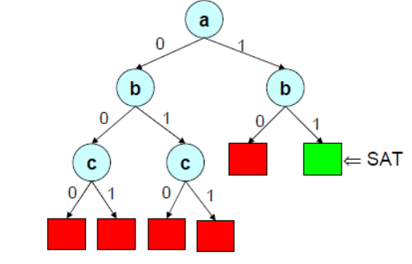
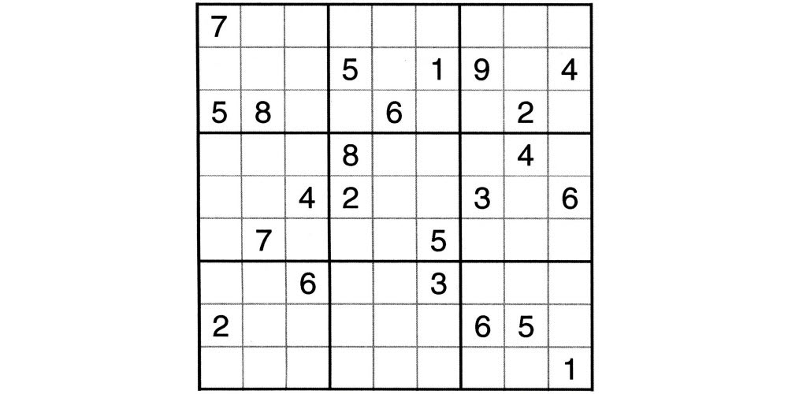
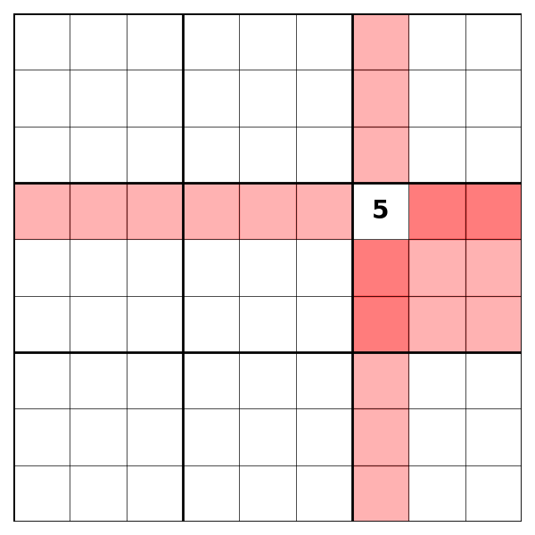

Implémentation de l’algorithme DPLL (Davis–Putnam–Logemann–Loveland) pour vérifier la satisfiabilité de formules en forme normale conjonctive (CNF)
Implémentation d’un algorithme de force brute testant toutes les combinaisons possibles pour identifier une formule satisfiable

Génération d’une grille de Sudoku à partir d’une liste de listes, où chaque sous-liste contient les coordonnées et la valeur associée. La grille finale est représentée sous forme de liste unidimensionnelle

Définition des contraintes de la grille (lignes, colonnes et régions) via une fonction, avec une représentation sous forme de liste de listes